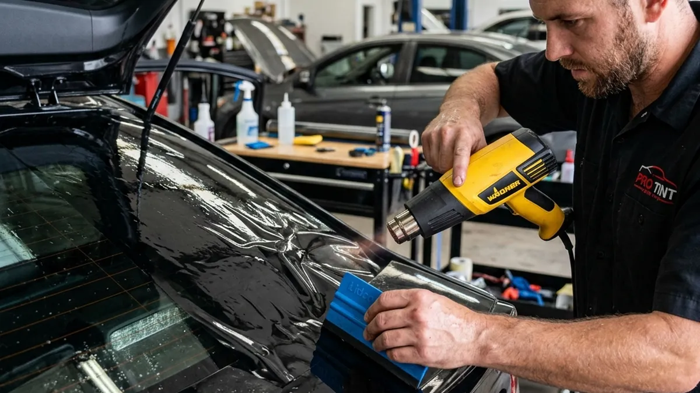

We've all been there. You look at a quote for professional window tinting and think, "I can just buy a pre-cut kit online and do it myself." You pull up a YouTube video on how to install car tint, watch a guy effortlessly squeegee a piece of film, and assume it will take you a couple of hours on a Saturday afternoon.
What the video doesn't show you is the agonizing reality of trying to manipulate specialized polymer film in a dusty driveway. Attempting a DIY tint job almost always ends in frustration, wasted money, and a car that looks terrible.
The Nightmare of Heat Shrinking
Car windows are not flat. Even the roll-down door windows have a slight curvature, and rear windshields are massively curved. You cannot simply peel the liner and stick the film on the glass. The film must be heat-shrunk using a high-powered heat gun to precisely match the convex shape of the outside of the window before it is ever brought inside.
If you don't know exactly how to install car tint using the "dry shrink" or "wet shrink" methods, you will instantly crease the film or burn right through it. Once a crease happens, that piece of film is permanently ruined.

The Invisible Enemy: Dust
Even if you miraculously manage to shrink the film, you still have to install it on the inside of the glass. The moment you peel the clear protective liner off the tint, static electricity turns the film into a magnet for every speck of dust, dog hair, and pollen within a ten-foot radius.
Professionals install tint in heavily controlled, enclosed, and repeatedly cleaned bays. If you attempt this in your garage, you will end up with dozens of tiny dirt bubbles permanently trapped under your film. Save yourself the headache, the ruined film, and the wasted Saturday. Let the pros at Riverside Tints handle it perfectly the first time.